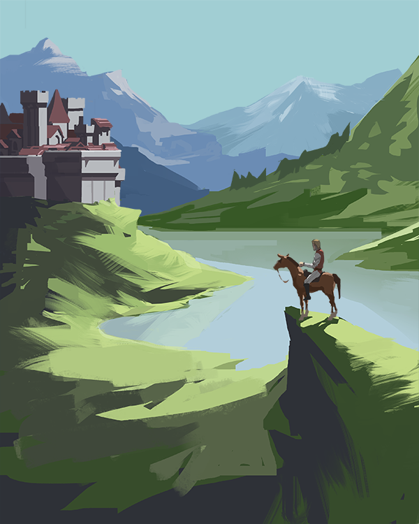
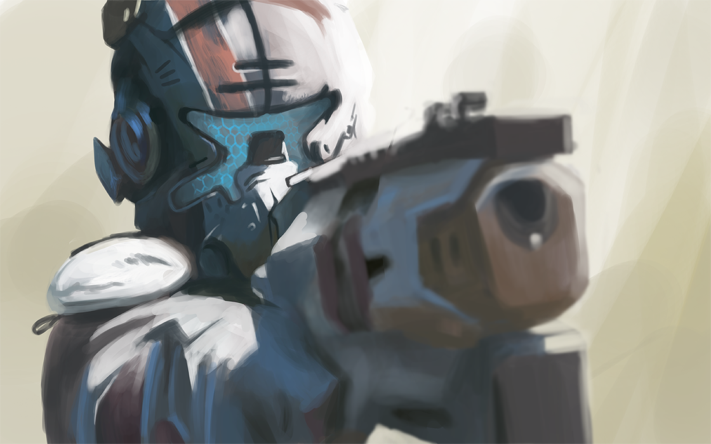
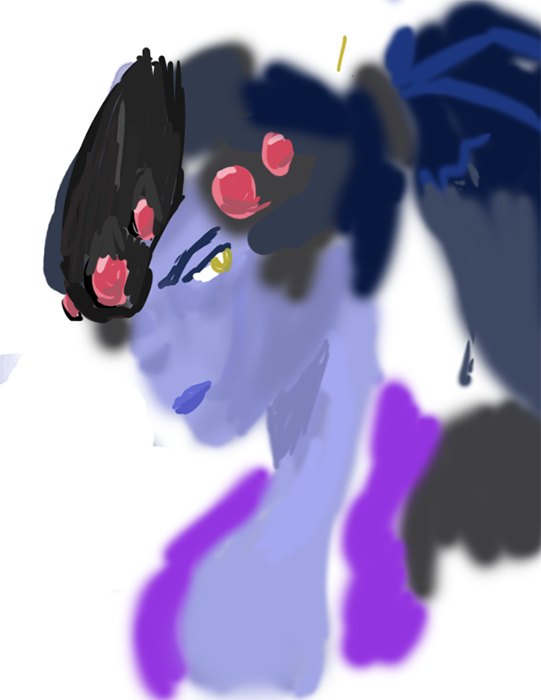

nov. 2023 - 667

oct. 2023 - 662

oct. 2023 - 664

oct. 2023 - 661
another experiment. I painted this with my mouse which surprisingly didn't feel all that different

oct. 2023
"vibe" xd

oct. 2023
something of a phase

feb. 2023
"Red Angel"

jul. 2023
didn't get very far on this one but it looks kind of neat

may 2023
This was my page for a community redraw of Blame!'s first chapter. Was interesting trying a different style

oct. 2021
I think stuff usually turns out better if I don't think that much about it

aug. 2023
The last thing I ever tried to render out. Realized it's not my thing lol (patience is non-extant)

sept. 2023
Clive Bell mockingly suggested that the sole purpose of art to most was to depict women. I think that might have been right though.

aug. 2023
This was for the artstation challenge around that time. We were supposed to submit four paintings; I got about half of the way through one. Hard edges are just a real pain in the ass

feb. 2022
I tried doing 'storytelling' once and ended up with this pretty kitsch thing. I kind of liked the values though

aug. 2022
a rare fanart

sept. 2022
When I have a phase in art it's like two images and then I'm done xd

oct. 2022
I kind of like this. Easier to have a promising sketch than anything complete though

june 2022
From a photo. Yeesh those hard edges on the underside of the bridge tho

nov. 2022
Another study. Too many brushstrokes now that I look at it again. I think I knew it at the time though

sept. 2021
Figure drawing is one of the best expressors of spatial/kinesthetic intuition, particularly low time controls.

oct. 2018
I always found people's older stuff interesting to see so here's some of that..

aug. 2017
This was randomly way above my ability at the time, even for a copy of a photo. Like when you get a top play in a rhythm game half by luck

dec. 2016
My first painting. Pretty epic tbh